Warning, this one has spoilers for the davinci code, angels and demons and the new captain america movie. If any of you care about the fact i spoilt the davinci code i will be furious the lady is the descendant of jesus get over yourself tom hanks has terrible hair no. this is the spoiler warning not my thoughts. Also holy hell did i watch a lot of media this month and have a lot of thoughts about them hot damn
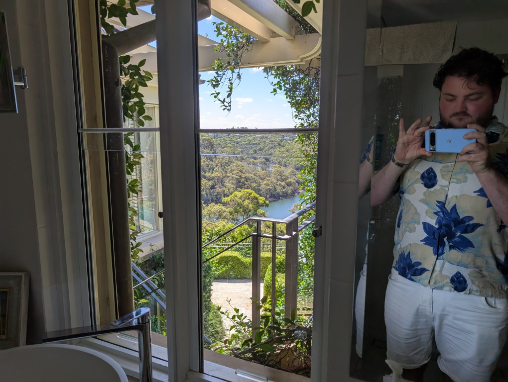
Started the month at my grandparents place and this is still the fanciest bathroom imaginable that also has 0 privacy, the stairs to the backyard go right past here so you gotta tactcially pee to not get spotted
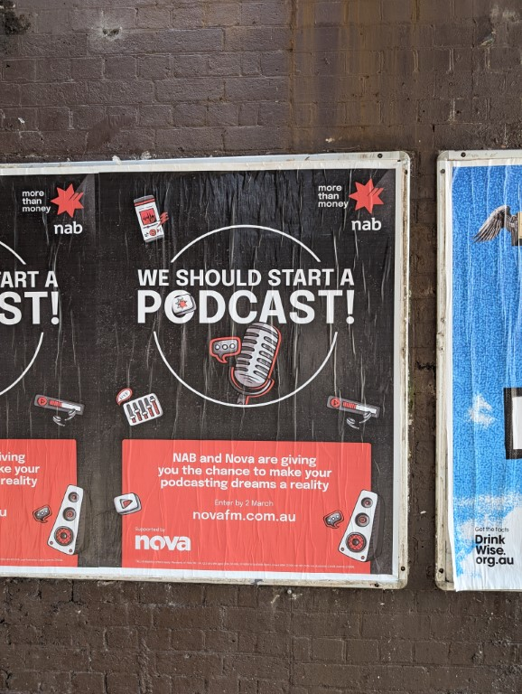
Saw this poster under the train line and got irrationally angry at how nab are encouraging people to start podcasts - theyre a fucking bank they shouldnt be doing that
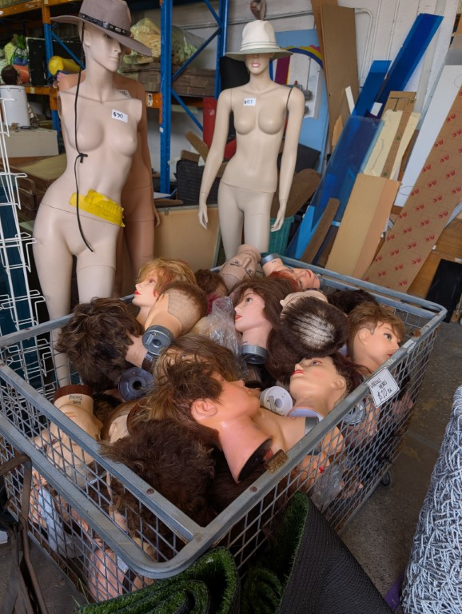
Went to reverse garbage and they never fail to impress with boxes like these
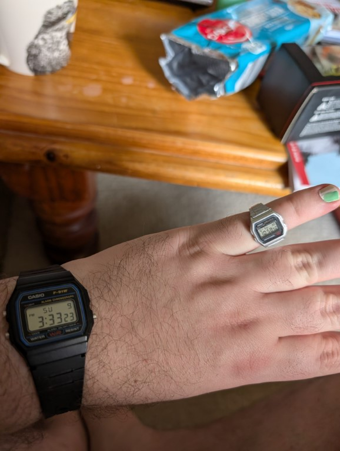
My brother came back from japan and gave me some stuff but this little casio ring is the most delightful even if it only fits on my pinkie
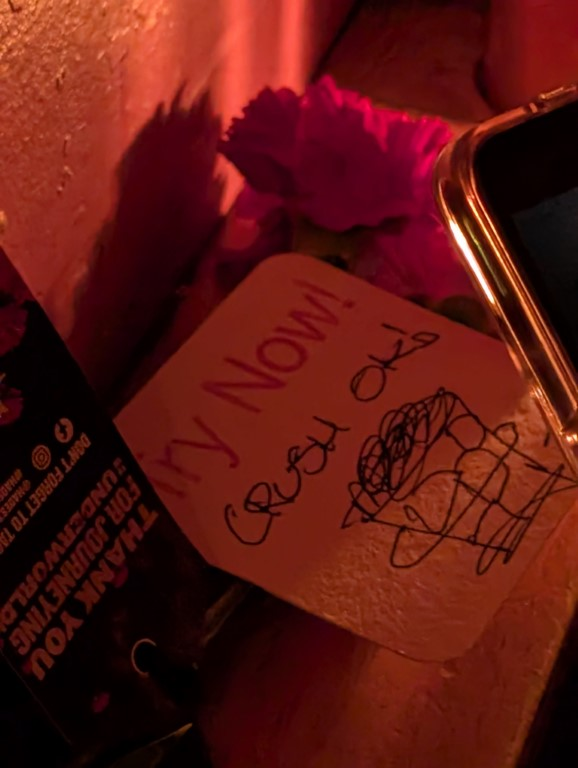
Went to a bar after hadestown where they draw the special for you on a coaster and it is so small and crowded that i didnt hear what it was but ordered it anyway and it turned into jelly eventually which i realised - i don't like
Went to a very straight baby shower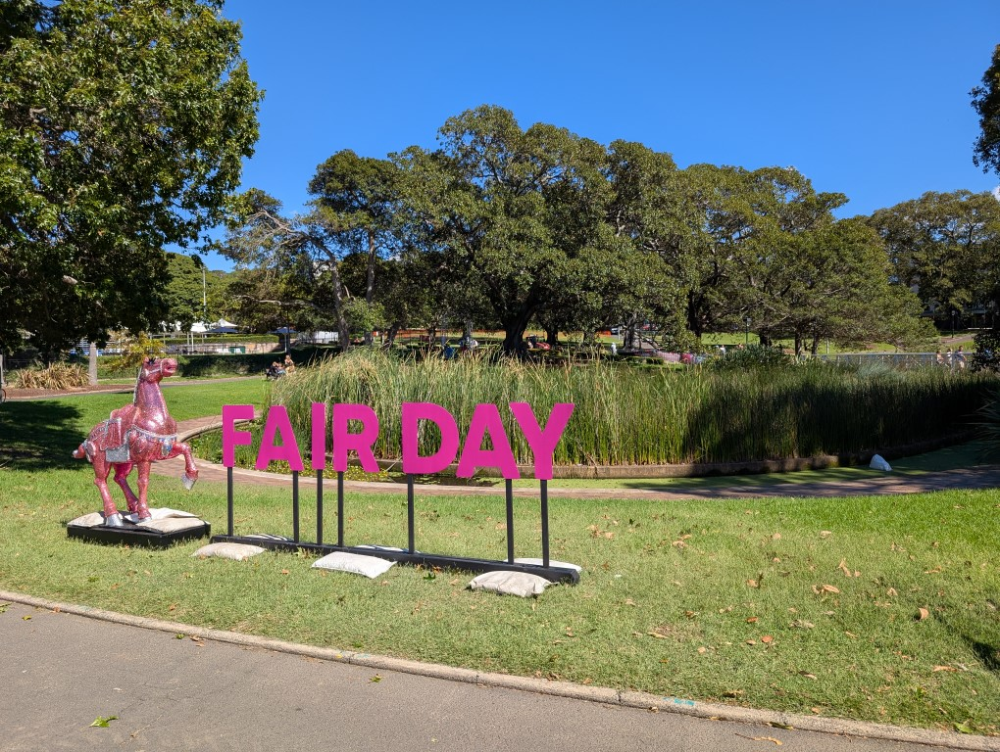
Then went to the very gay fair day
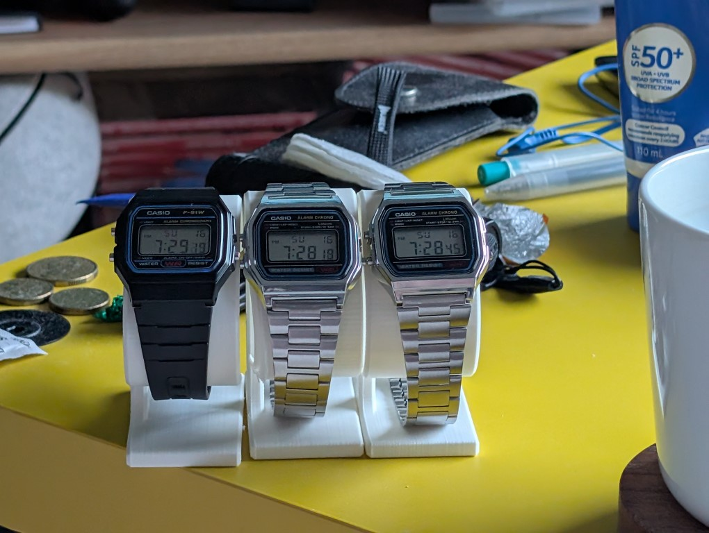
3d printed some stands for my watches, i have since done my best to syncronise them as it was bugging me that they were all so far off
Went to a taping of guy montgomery guy mont spelling bee, show very good
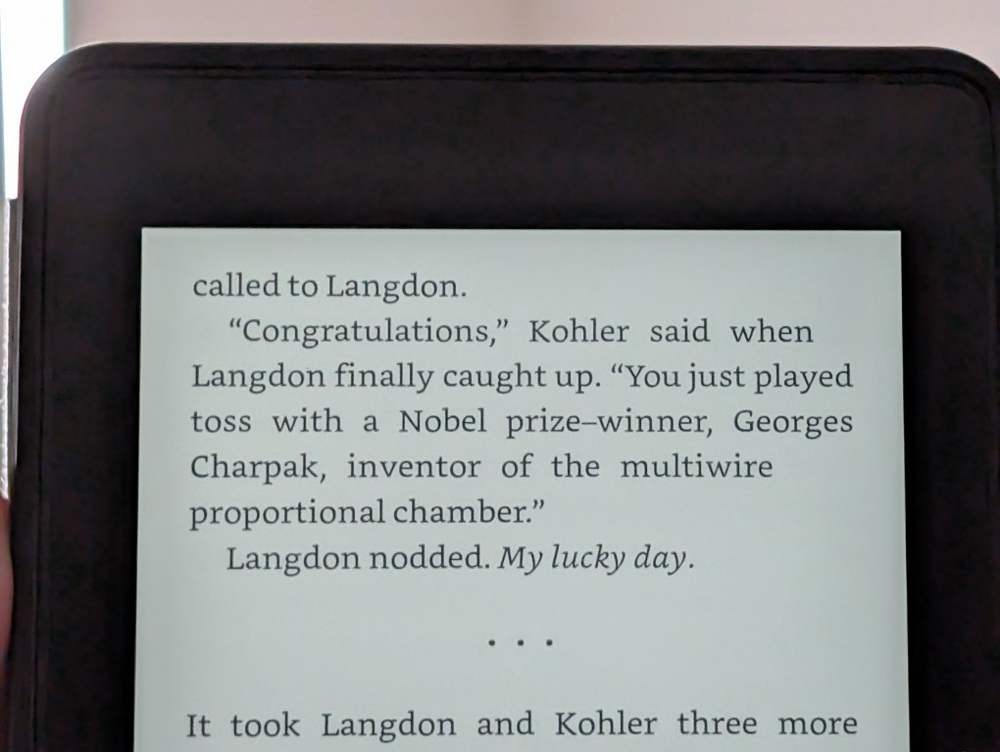
I got about 5 chapters into angels and demons (read on and you may understand why, also they were super short chapters) and holy shit can this guy not write
Went to the maze that is macquarie shopping center and the ice skating sign being like this is ever such a vibe
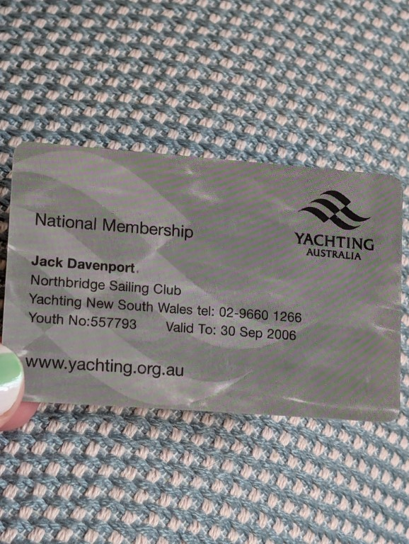
Cleaned out a bunch of old shit from my old room and found this card from when i was forced to do sailing on the weekend and had possibly the worst time of my life at it.
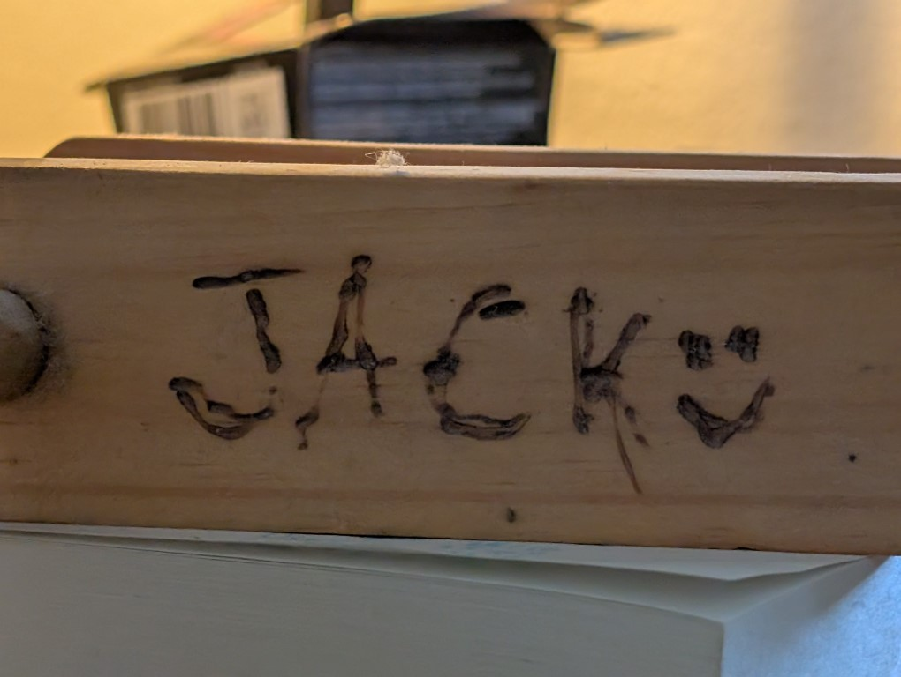
Also found this kite handle which was made in year 7 and i just think its neat.
Severance - look its still good, theres a part where someone gets a list of grievances printed in an properly bound book and the graphic design on it is nuts and now the cinematographer is directing and they are ever so talanted
Paradise - I started watching this because i thought it would be a fun murder mystery but its far more of a political thriller, its wierdly wierd? No i don't know what that means - its fine. Its pretty good but there are some bits that are very signposted and other bits that i felt came outta nowhere and theyve got a 2nd season confirmed and i have so many thoughts about where the fuck its going to go next
Happy Endings - This is a strange show, its the reason that coach isnt in the first season of new girl, its a sitcom about 6 friends and the pilot is literally two of them getting married and she runs out on him. He then gets depressed and immediately i was like. Yes. whenever this man succeeds i am upset but whenever something bad happens to him i am sat up straight. No expression on my face as i whisper to myself “good”. He at one point finds out his 1/16th native american and goes super fucking hard into it and its just real white boy hour. The best part is the guy from new girl and the gay guy but also its aged sorta poorly which is wild as i was about to be like “oh its in that era before shows were like willing to not punch down as much like community” but community started in 2009 and this started in 2011. A few weeks after this started a fistfull of paintballs aired hot dog.
The Davinci Code
- i saw that dan brown had a new book in this series coming out so i thought “yeah fuck it, ill watch the movie” and holy shit was it bad. First off i accidenly sourced the directors cut so it was almost 3 hours long, but also it didnt come with subtitles so the first 50 mins any time leon the professional was talking in french i was just nodding along occasionally picking up on words but mostly going “i wonder if this is better with subtitles”. By the time the guy from angie tribeca showed up and had a full scene not in english i snappes and found my own subtitles (the ones plex provided were either 5 seconds fast or 5 seconds slow). The strange thing about the entire movie is that ron howard is sorta cooking? Like the script is nonsense and tom hanks is giving the worst performance ive ever seen from him but there are some cool visuals in the movie! It just doesnt help that i guessed the whole “direct blood decendant of jesus christ” thing about halfway through so when it fucking dragged out the reveal over 10 mins i was in agony. Will i watch the rest of them? I dunno. Its currenlty 10pm on saturday the 15th and oh no im gonna do it now aren't i
Angles and Demons - this opens with some truly beautiful shots of the big science thing in CERN and i really think that ron howard (massive nerd) got the permission to film in there and went fuckin hog wild - like you can skip through them talking no in english and also the fact that a priest is in the hadron collider but the opening shots are shot by a guy who was just facinated by what it was https://youtu.be/RVTCs8ZNOOc - ok its now midnight and its done, holy shit that movie was watchable?? It had a fuckin ticking timb bomb that made sense, the threat was real the twist was obvious and ewen mcgregor was supposed to be from ireland but sounded 100% just himself but it was fine. Also it was about a conclave and every time they would do something conclave related id do the leo meme excited that i know about that because i saw conclave. Also the entire movie is them racing to stop this bomb from going off, but in the end it goes off and it fucking does damage. There are several shots of crowds being blown back, buildings being destroyed and i just kept laughing to myself about how ridiculous it was.
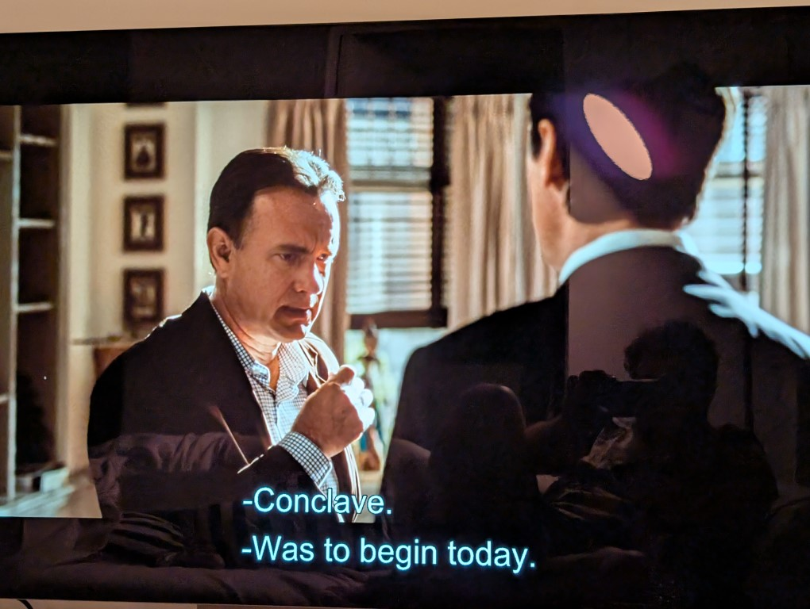
When this happened i was hooting and howling waiting for ralph phones to show up
Inferno- God this was dull and boring. It started out interesting! Tom hanks had amnesia and wakes up in a hospital with visions! But then damn it goes boring. It just keeps going and eventually it shows its hands and brings in some twists and i was like “oh thats it?”. Also the mcguffin in this is an virus thats going to wipe out half the population and that might just sting. Idk why but i just really couldnt focus on it. Was boring. Played balatro.
Captain america brave new world order or whatever its called - I really think im over marvel. I know this is a hot take to say now (i will absolutely be watching daredevil now fisk is the mayor or whatever its called) but this one was like . just eh to me? I remember the falcon and winter soldier show feeling like a movie that was chopped to bits to remove the pandemic storyline and now this feels like a movie thats been reshot to death to introduce new plot lines that sorta go nowhere and also cut around the fact one of the lead characters is marvel comics big “isreal #1” super hero (rumours say they cast her right before the genoside started and have been just slowly cutting out her scenes as they got closer to release) anyway like 3/10 - was eh. It also felt rushed. And yes. That might be because i watched it at 1.5x because it seemed boring but theres no fucking scenes! Everything was just exposition and then moving on. Wait no there was one bit at the start but it was with the new falcon guy and he is too quipy i cannot stand him anyway its hilarious taht they peaked with the winter soldier and ahve been chasing that high ever since (if the movie just slowed down and let scenes play out it would be better)
Hadestown -see below, i loved it.
Candide - this was an opera. Now you might be going “jack i thought you hated the idea of an opera” and oh boy i was right, the best part was eddie perfect playing the narrator but basically as aussie beetlejuice. I do think the plot of the show was a lot of fun and finding out it was made through spite? Oh it made me adore it even more. Every song made me want to get up and leave tho that was a lot - oh i just remember i mainly went to it as i saw steven sondehim did some of the lyrics but i really think i saw a version of the show that he didnt because theres multiple long blog posts about his contribution to the show and it seems like most of it is not a lot.
From the Apple Tree - This was an small production of three small musicals, all with common themes. It was a lot of fun but really none of the songs stood out (its from the 60s when the best thing was the original west side story ew) but the stories were pretty fun. Also it tought me that adam and eve were the parents to the kid who beans his brother on the head.
Wuthering heights - I had no idea what this book was but this musical? Stage play? Operatic version of the story was nuts, or maybe the story itself was nuts but it was so electric and wonderful and fucking bananas? And also having a POC playing heathclif makes so much sense why do they keep casting white men ughk, also turns out this was straight off the west end cast so there is a proshoot of this exact show which is great because act 2 has a character as a ghost just lurking around the stage. Also the moore is the ensemble and its such a cool idea
Presence- this just feels like soderbergh showing off, its shot at 14mm and so its super fucking wide angle, honestly it is so good i don't wanna spoil it. The movies under 90 mins (if it was any longer it probs wouldve gotten old) i don't think its showing in many theatres but you can always sail the seas its so good. Actually fuck it this isnt a spoiler its in the trailer - Every time someone just clocks the camera my body fully shivered it was so spooky, also its a ghost story where its not jumpscare central!
Ive seen it twice. Both times the gasps from the audience when he fails the challenge got me (i was already very crying at that point, hearing sniffles from the crowd during the final reprise rules). The first time was opening night and the second was the premier. Seeing it in a crowd full of people who are fucking here for it was incredible. The cheers after each song was so good and getting to feel the trumpet going in my bones at the start was iconic.
Also they gave us flowers on opening night but they were real and mine has finally withered which feels like a beautiful metaphor for what the show was
So im a ners i know that but one thing i like when watching movies is seeing an phone or laptop that is an dead flop. Like in several movies they use the surface duo, the microsoft phone that has 2 screens (it was in captain america) and also in paradise they i think are using the essentials phone (aka the phone created by the founder of android who was ford out of google because he was a sex pest and went bust after a year). The two davinci code movies are fascinating because both are sony movies so everything is sony branded. Sony handy cam. Sony vaio laptop with media playback buttons with a lock (turns out this was so they could secretly record the pope) and also the sony logo right in shot. The funny thing is this is the era when having a sony laptop wasnt such an laughing matter.
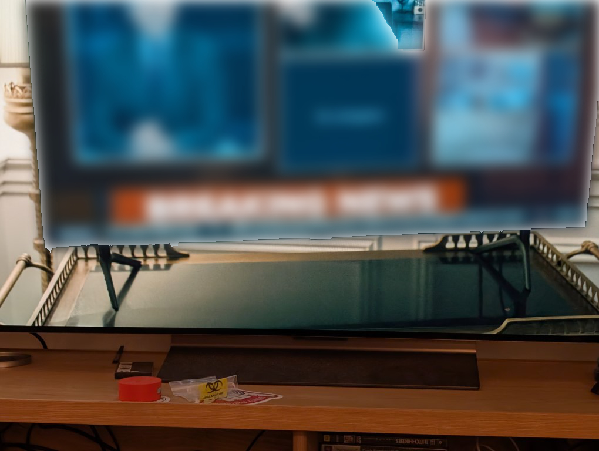
Also this is a pic from the latest ep of PAradise, ive blurred whats on the tv for spoilers sake but look at how theyve put the tv legs on backwards to fit it onto this trolley, this tv is on screen for like 10 seconds and some poor prop person had to do this to make it work.
Ok so this is a podcast that makes me more mad then hell but for some reason i still occasionally listen and fuckin oath. Its hosted by richard osman (the tall man from s2 of taskmaster and the host of richard somans house of games and a producer on the original uk run of whose line and also an author my mum loves) and mariana hide (i think she writes for the guardian uk?) and its fascinating because they have such a wealth and depth of knowledge about british tv shows when richard can just call up his producer friend and find out about how they make a show and what now.
But then whenever they talk about movies they are so unbelievably out of their depth and they disudiscussed mr beast and youtube they sound 100 years old. The reason i bring them up now is that the reason iw atched the dan brown movies (at time of writing ive only seen 2 of them but i can feel inferno itching away at the back of my head and oh no theres a prequel tv show i shant be doing that) and they kept saying “oh well dan sells a lot of copies of his book. You can say its trash but he sells” and i was like “ok what about the movie” and fucking hell its trash. Like not just trash but bin juice thats been left in the sun on accident as you went away for a month and left a bin bag on your balcony - ive just put on the trailer for inferno and fuckin oath its about dantes inferno this is gonna be insufferable. https://youtu.be/RH2BD49sEZI fuck its such a bad trailer every time hanks speaks it looks like his holding down a burp. Anyway this podcast stinks, i keep watching it for some reason and also when the gregg wallace sunday article came out ( https://x.com/edcumming/status/1754508139003580918?lang=en or https://archive.is/oCaYc the man is alan partridge )richard defended him and its ohf
Having my brainoct in on some fuckin piece of tech thinking “well if I had that then it would fof me and my life would be so much better” keeps happening. I just wanna outline some of them.
The first was the beepy, basically a blackberry that has a raspberry pi zero in it and runs full linum it's made by the guy who made the pebbelnwatch and also created an app that lets you have all of your chat apps in one. The main idea behind this device is you could do all of your chats from there (or at least that's what I think, very few of these were made and there's little information about it beyond a discord of 12 people who are constantly dealing with people who join asking if more will be made or when they're going on sale again and tell them it's absondonwear basically or you buy a colour one for 400 AUD. Note I'm not doing that I don't need one that bad) anyway.
I've started wearing watched (the cool old Casio digitals as they're tiny) and I get the idea of a smart watch now but the size of the pixel watch (and also that fuckin nothing one I bought) really turn me away from it. But ages ago I remembered that I got two seperate pebbles for Christmas (one bulky launch one and the other the slimmer and colour screened pebble time) and went “I should try using them again” one ritalin later and I had ripped apart my draws (where I thought they were) with an unsuccessful search and I'm honestly gonna go look again becuase they're in my old room somewhere ive just gotta get high af and search properly becuase they are expensive on eBay and also ew it's a used watch. But fuck the time round is so sexy and thin ughkt
Anyway basically this one nerd made two cool devices and his making a new one so anyway I dunno what this is about I'm on the train to circular quey to see an operah now and I don't know why I'm doing this, I only really got it becuase it has Eddie perfect in it and it's the version that has some Sondheim lyrics? But honestly Sondheim is such a goated composer becuase he does both anyway belles hot chicken why is this down here jack close google docs
https://x.com/popculture2000s/status/1886875821253476689
Im just linking this because its hilarious. The hard cut between the guy fuckin sprinting to just two bits of ham going for it gets me every time. Also i found out the concert of the show is this guy and his gf are on the show to see if she can not give in to temptation and i feel so bad for this guy because he has to watch while she gets down. The host just having to sit there and watch with him feels brutal, theres several other clips of this but love a good emotional spanyard
So smosh was something i watched in high school? And now its like. Good? Not that it wasnt good in the middle no actually during defy i think they were getting fucked but it seems during their mythical era they got good and ive been watching so many of their vids and i just wanna link a few because there are some great comedy vids
https://youtu.be/za3hPXB1VQM (this is an ep of bit city which is their sketch long form improv show and the woke mob in this is great)
https://youtu.be/-w33inkzCKU this has so many great moments but “somehow ive made myself drunk” is an absolute highlight. And also “Come on back to mama”
https://youtu.be/8pulEaPiz6E im only gonna link a clip to this but chance’s spud hut bit is fuckin incredible “why are you so hot” “because of the spuds”
https://youtu.be/Znydk5M3GuM this gentlemen don't win is great, they play these horrific british gentleman characters and spencer just says the most horrific shit but its great
https://youtu.be/SzpFdrLU3HU i think this is their best try not to laugh
https://youtu.be/k8Y1fQuuASg?t=956 the segment of this video where angela goes through all the dogs she fostered during the pandemic
https://youtu.be/jW8ArzcpcQ8?t=544 this is a song from a show called bright star, which has songs written by steve martin and it came up on my ipods shuffle and its just an entire song about death and sure maybe i havent fully processed the recent death things and thats why it gets to me so much but its good
https://youtu.be/SJClY2gHItE i edited this video almost 4 years ago (aaaaah) and i just wanna link to it as i randomly got recommended it and i think its a good edit and its dumb and good anyway i don't know how to compliment myself
Well thats all folks. im february is a wash. Also im ready to get a new laptop as my dell xps 15 had windows explorer crash twice while i was making this, sure it might only have 20gb of space left on the ssd but thats plenty of space! Also id love to have one of those new fancy laptops that doesnt just raidnet heat constantly, id love to be able to use a laptop in the summer without sweating and a battery that lasts more than 2 hours. so anyway those are goals hope you are all well